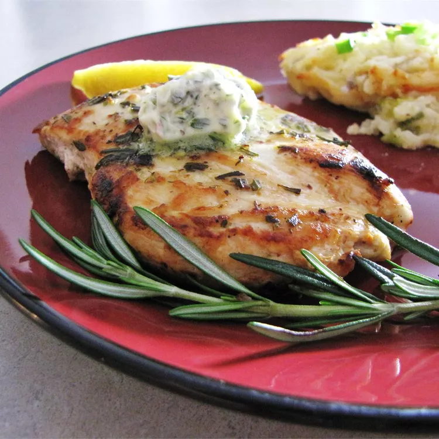

Rosemary Lemon Grilled Chicken

Description
Grilled Lemon Rosemary Chicken is a super flavorful and easy recipe that you will make over and over during the grilling months! Fresh rosemary and lemon come together for a flavorful chicken breast recipe that is easily cooked on the grill.
Grilled chicken is a go-to for us during the summer. There are so many options when it comes to rubs and marinades, and it's so easy to make. Grilled Lemon Rosemary Chicken is one of our staples for an easy summer dinner, and I also love making a batch for salads throughout the week. It is such a versatile recipe that goes with pretty much any side dish!
Ingredients
- ½ cup butter
- ½ cup fresh rosemary
- 3 garlic cloves
- 1 lemon, zested
- ¼ cup fresh lemon juice
- 6 (6 ounce) skinless, boneless chicken breast halves
- salt and pepper to taste
Steps
- In a food processor, blend butter, rosemary, garlic, lemon zest, and lemon juice together. Pour 1/3 of the blended mixture into a small bowl for marinade. Cover remaining mixture, and set aside.
- Lightly season chicken breasts with salt and pepper. Rub chicken breasts with marinade. Place chicken breasts on a platter, cover, and refrigerate for 3 hours.
- Preheat an outdoor grill for high heat and lightly oil the grate. Transfer half of the reserved rosemary and lemon mixture into a bowl for basting. Cover remaining mixture, and set aside for topping cooked chicken.
- Cook chicken breasts on hot grill, basting with rosemary and lemon basting mixture, about 4 minutes per side. An instant-read thermometer inserted into the center should read at least 165 degrees F (74 degrees C). Remove chicken breasts from the grill, and top with remaining rosemary and lemon mixture.
- Serve with your favorite side dishes.
- Enjoy your meal!
Home